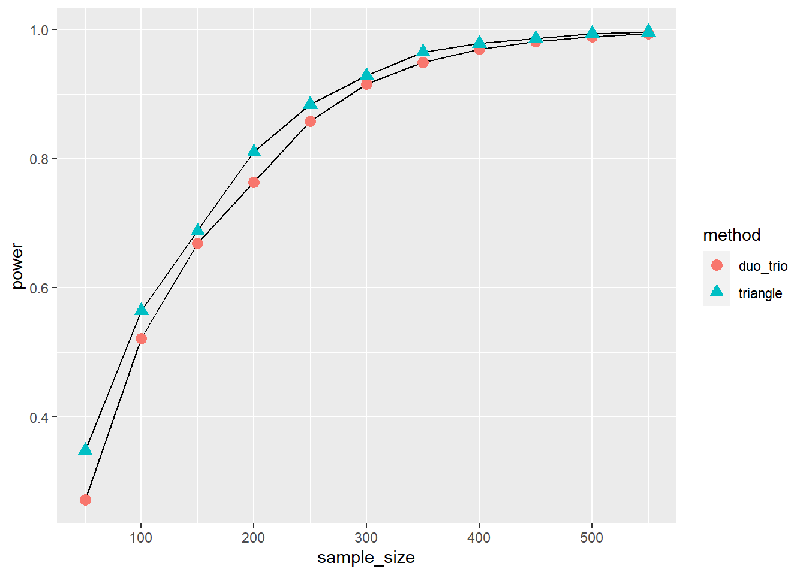
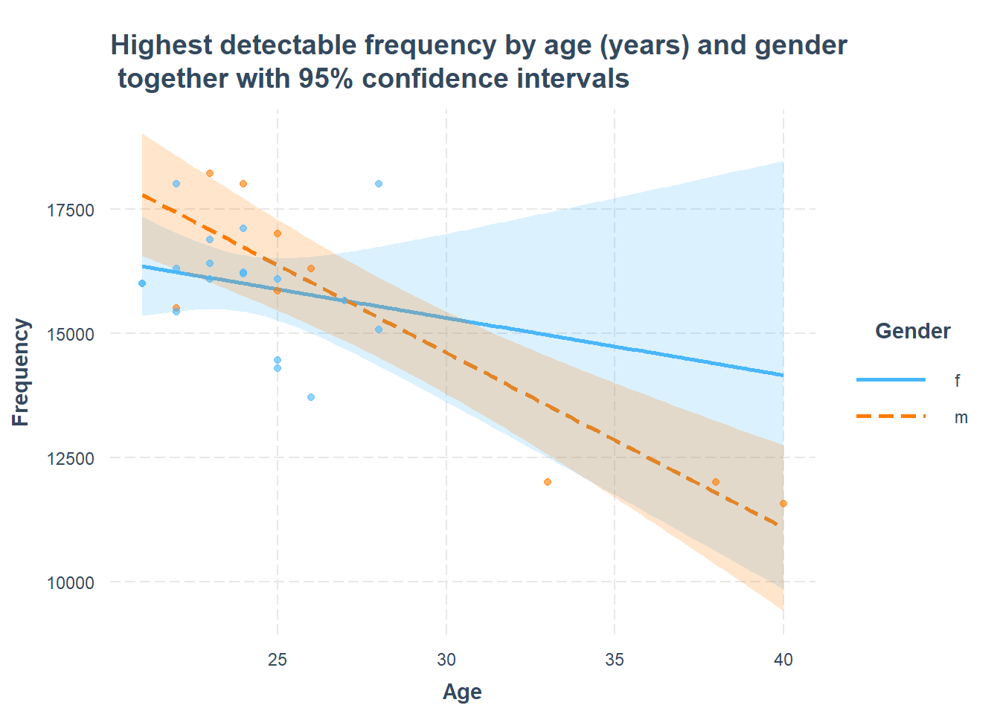
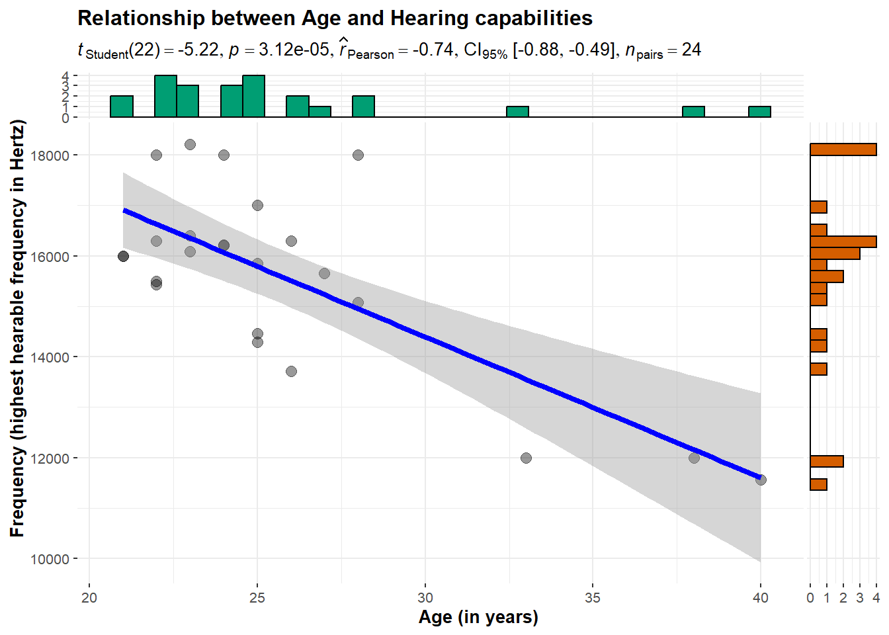

![]()
if (!"pacman" %in% rownames(installed.packages())) install.packages("pacman")
library(pacman)
pacman::p_load(tidyverse, SensoMineR, sensR, pwr, openxlsx, labelled, lm.beta, ggstatsplot, interactions, psych)
Connect with me on Open Science Framework | Contact me via LinkedIn
It might be necessary to right-click -> open in a new browser window, depending on your machine.
R analysis script presenting the solutions for exercise 6 in Sensory Marketing and Product Innovation
The purpose of this script does not lie solely in answering the exercise question. Moreover, studying these scripts should help students become familiar with some aspects of working in R.
If this grabs your attention
If this exercise grabs your attention, please check out our master study programs at the Otto-von-Guericke-University in Magdeburg (Germany) by clicking on the logo!

1 Loading packages
Beware!
R is a context-sensitive language. Thus, ‘data’ will not be interpreted in the same way as ‘Data’ will.
In R, most functionality is provided by additional packages.
Most of the packages are well-documented; see: https://cran.r-project.org/
The code chunk below first evaluates if the package pacman (Rinker & Kurkiewicz, 2018) is already installed on your machine. If yes, the corresponding package will be loaded. If not, R will install the package.
Alternatively, you can do this manually first by executing install.packages(“pacman”) and then library(pacman).
The second line then loads the package pacman.
The third line uses the function p_load() from the pacman package to install (if necessary) and load all packages that we provide as arguments (e.g., pwr (Champely, 2020), which provides functions for statistical power calculations, or sensR (Christensen & Brockhoff, 2023), which provides access to many functions useful in sensory product research).
Expand to learn more about calling functions
In all code chunks throughout this script, you can receive additional help on each used function by clicking on its name (or via right-click and then opening in a new browser tab). Alternatively, when coding, we can see which arguments a function understands by pressing ‘F1’ while setting the cursor to the function’s name.
Here is the R session info, which gives you information on my machine, all loaded packages, and their version:
R version 4.3.1 (2023-06-16 ucrt)
Platform: x86_64-w64-mingw32/x64 (64-bit)
Running under: Windows 11 x64 (build 22621)
Matrix products: default
locale:
[1] LC_COLLATE=German_Germany.utf8 LC_CTYPE=German_Germany.utf8
[3] LC_MONETARY=German_Germany.utf8 LC_NUMERIC=C
[5] LC_TIME=German_Germany.utf8
time zone: Europe/Berlin
tzcode source: internal
attached base packages:
[1] stats graphics grDevices utils datasets methods base
other attached packages:
[1] psych_2.3.9 interactions_1.1.5 ggstatsplot_0.12.1 lm.beta_1.7-2
[5] labelled_2.12.0 openxlsx_4.2.5.2 downloadthis_0.3.3 pwr_1.3-0
[9] sensR_1.5-3 SensoMineR_1.27 FactoMineR_2.9 lubridate_1.9.3
[13] forcats_1.0.0 stringr_1.5.0 dplyr_1.1.3 purrr_1.0.2
[17] readr_2.1.4 tidyr_1.3.0 tibble_3.2.1 ggplot2_3.4.4
[21] tidyverse_2.0.0 pacman_0.5.1
loaded via a namespace (and not attached):
[1] mnormt_2.1.1 rematch2_2.1.2 sandwich_3.0-2
[4] rlang_1.1.1 magrittr_2.0.3 multcomp_1.4-25
[7] compiler_4.3.1 statsExpressions_1.5.2 vctrs_0.6.4
[10] reshape2_1.4.4 pkgconfig_2.0.3 crayon_1.5.2
[13] fastmap_1.1.1 pander_0.6.5 utf8_1.2.3
[16] rmarkdown_2.25 tzdb_0.4.0 haven_2.5.3
[19] xfun_0.40 jsonlite_1.8.7 flashClust_1.01-2
[22] parallel_4.3.1 cluster_2.1.4 R6_2.5.1
[25] stringi_1.7.12 numDeriv_2016.8-1.1 estimability_1.4.1
[28] Rcpp_1.0.11 knitr_1.44 zoo_1.8-12
[31] parameters_0.21.3 correlation_0.8.4 Matrix_1.6-1.1
[34] splines_4.3.1 timechange_0.2.0 tidyselect_1.2.0
[37] rstudioapi_0.15.0 yaml_2.3.7 AlgDesign_1.2.1
[40] codetools_0.2-19 lattice_0.21-8 plyr_1.8.9
[43] withr_2.5.1 bayestestR_0.13.1 coda_0.19-4
[46] evaluate_0.22 survival_3.5-5 zip_2.3.0
[49] jtools_2.2.2 pillar_1.9.0 KernSmooth_2.23-21
[52] DT_0.30 insight_0.19.7 generics_0.1.3
[55] paletteer_1.5.0 hms_1.1.3 munsell_0.5.0
[58] scales_1.2.1 gtools_3.9.4 xtable_1.8-4
[61] leaps_3.1 glue_1.6.2 emmeans_1.8.9
[64] scatterplot3d_0.3-44 tools_4.3.1 mvtnorm_1.2-3
[67] grid_4.3.1 datawizard_0.9.0 colorspace_2.1-0
[70] nlme_3.1-162 patchwork_1.1.3 cli_3.6.1
[73] fansi_1.0.5 gtable_0.3.4 zeallot_0.1.0
[76] digest_0.6.33 ggrepel_0.9.4 TH.data_1.1-2
[79] htmlwidgets_1.6.2 htmltools_0.5.6.1 lifecycle_1.0.3
[82] multcompView_0.1-9 MASS_7.3-60 2 Finding an answer to case #1 - Discrimination testing – The case of Jägermeister’s grated deer horn
2.1 Task 2 - Analyze whether the test results support the notion that consumers can detect the product differences between both variants.
Jägermeister was conducting an unspecified Duo-trio test for product differences with 206 regular Jägermeister consumers. In such a test procedure, consumers are asked to compare two product variants (Jägermeister Original vs. Jägermeister Grated Deer Horn). A reference product is first served. Then, consumers must decide which of the two other product samples matches the reference product. The reference product is sometimes Jägermeister Original and sometimes Jägermeister Grated Deer Horn. Also, the positions of the two product samples are counterbalanced across consumers following an experimental design.
The company observed 121 (out of 206) correct matches within the test.
The package sensR provides functions to handle nearly all types of discrimination tests, including Duo-trio tests. We will use the function discrim(). This function allows us to specify many arguments (see help by pressing ‘F1’). We will do so for
- correct = the number of correct answers
- total = total number of responses
- conf.level = significance level (Type I error probability \(\alpha\)), usually 0.95, corresponding to 95%.
- method = the discrimination protocol applied (see lecture slides for the various options)
- statistic = The analysis strategy for the data (whether one wants to use normal distribution or Chi², etc.)
- test = Whether a test for similarity or difference should be obtained.
Below, we assign the results of our Discrimination test to a new object named ‘duo_trio_test.’ Then, we call for its content.
duo_trio_test <- discrim(
correct= 121,
total= 206,
conf.level = 0.95,
method = "duotrio",
statistic = "score",
test = "difference")
duo_trio_test
Estimates for the duotrio discrimination protocol with 121 correct
answers in 206 trials. One-sided p-value and 95 % two-sided confidence
intervals are based on the Pearson and score statistics.
Estimate Std. Error Lower Upper
pc 0.5874 0.0343 0.51671 0.6547
pd 0.1748 0.0686 0.03342 0.3095
d-prime 1.0329 0.2282 0.43085 1.4485
Result of difference test:
Pearson X-square statistic = 6.291262, df = 1, p-value: 0.006067
Alternative hypothesis: d-prime is greater than 0
Interpretation
As the results of the \(\chi^{2}\)-test are significant (p=0.006), we must reject H0. Thus, consumers can reliably distinguish between the new and the old Jägermeister recipe. Of course, this does not answer whether the grated horn variant tastes better than Jägermeister Original.
- In the output above, pc means the percentage of correct discriminators (121/206).
- pd stands for the estimated proportion of individuals in the (relevant) population that would detect the product difference (17.476%). In the case of a Duo-trio test, this is \(pd=\frac{pc-1/2}{1/2}\). Note that the confidence interval for pd has an upper limit of 30.95%. Thus, in the worst case, the true proportion of discriminators is almost as high as 31%.
- The Thurstonian approach of transforming the number of correct answers into an estimate, called d-prime of the underlying (relative) sensory difference, is an attempt to overcome the concepts of pc and pd since these are dependent on the concrete test protocol one has applied (e.g., Triangle vs. 3-AFC tests). The higher the value, the higher the difference between the tested products.
2.2 Task 3 - Analyze whether a Triangle or a Duo-trio test has higher statistical power to detect the product differences between both variants.
Again, we use functions from the sensR package. Further, we assume that the observed d-prime from Task 2 is the true effect size in the underlying population. Consequently, we will use this d-prime estimate (1.03) as input to compare the statistical power of the Triangle test vs. the Duo-trio test (each with n=201).
We start with the Duo-trio test. In the code chunk below, we use the obtained d-prime as input for the function d.primePwr(). Furthermore, we specify all other aspects of our test.
power_duo_trio <- d.primePwr(
d.primeA = duo_trio_test$coefficients[3, 1],
sample.size = 206,
alpha = 0.05,
method = "duotrio",
test = "difference", statistic = "exact"
)
power_duo_trio[1] 0.782301
Interpretation
With the observed effect size for the difference, our Duo-trio test protocol only has a power of 78.23%. Thus, if the observed effect is the true effect in the underlying population, then we would have this chance to find a significant difference in a Duo-trio test with n=206 and \(\alpha\)=5%, which falls below the standard advice of having a statistical power of at least 80% (Cohen, 1988). Thus, Jägermeister should allocate more money to such tests to recruit more consumers.
Next, we proceed with the Triangle test.
power_triangle <- d.primePwr(
d.primeA = duo_trio_test$coefficients[3, 1],
sample.size = 206,
alpha = 0.05,
method = "triangle",
test = "difference", statistic = "exact"
)
power_triangle[1] 0.8270664
Interpretation
A Triangle test protocol would have a higher power of 82.71%. Therefore, if the observed effect is true in the underlying population and Jägermeister can not afford a larger sample size than n=206, the company should switch from a Duo-trio to a Triangle test protocol.
For the sake of completeness, I have visualized the development of the statistical power given a d-prime of 1.03 and an allowed \(\alpha\) = 5% for both test variants.
sample_sizes <- list(n50 = 50,
n100 = 100,
n150 = 150,
n200 = 200,
n250 = 250,
n300 = 300,
n350 = 350,
n400 = 400,
n450 = 450,
n500 = 500,
n550 = 550)
power_duo_trio_list <- sample_sizes %>%
map(~ d.primePwr(
d.primeA = duo_trio_test$coefficients[3, 1],
sample.size = .,
alpha = 0.05,
method = "duotrio",
test = "difference", statistic = "exact"
))
power_triangle_list <- sample_sizes %>%
map(~ d.primePwr(
d.primeA = duo_trio_test$coefficients[3, 1],
sample.size = .,
alpha = 0.05,
method = "triangle",
test = "difference", statistic = "exact"
))
power <- tibble(sample_size = c(50, 100, 150, 200, 250, 300, 350, 400, 450, 500, 550), duo_trio = power_duo_trio_list, triangle = power_triangle_list)
power_long <- power %>% pivot_longer(cols = c(duo_trio, triangle), names_to = "method", values_to = "power")
power_long$power <- unlist(power_long$power)
power_long %>% ggplot(
aes(
x = sample_size,
y = power,
shape = method,
color = method
)
) +
geom_line(color = "black") +
geom_point(size = 3)
3 Finding an answer to case #2 - Hearing test
3.1 Task 1 - Use a linear regression to evaluate if hearing capabilities are decreasing with increasing age in years.
3.1.1 Downloading the data
First, we will download the data from my homepage at the Otto-von-Guericke-University.
The dataset is stored as a .xlsx file (Microsoft Excel) within the following directory: https://www.ovgu.de/lichters/smpi/data/ The dataset’s name is hearing_test_2023.xlsx.
We first set the url (Uniform Resource Locator) for the download.
url_of_file <- "https://www.ovgu.de/lichters/smpi/data/hearing_test_2023.xlsx"We then download the file to our current R project. Base R isn’t able to handle Excel files that well. Thus, we are using the function read.xlsx() provided by the openxlsx package (Schauberger & Walker, 2023).
hearing_test <- read.xlsx(url_of_file) %>% as_tibble()If anything does not work out as expected on your machine, you can download the data by clicking on the following button.
Let’s have a look at the dataset:
hearing_test# A tibble: 27 × 4
Gender Age Frequency Year
<chr> <dbl> <dbl> <dbl>
1 f 21 16000 2022
2 f 23 16400 2022
3 m 25 15850 2022
4 m 26 16302 2022
5 f 21 16000 2022
6 f 22 18000 2022
7 f 28 18000 2022
8 f 26 13711 2022
9 f 25 14287 2022
10 f 24 16222 2022
# ℹ 17 more rowsIn the dataset, we find 4 variables in the columns.
- Gender provides a character for females (f) or males (m)
- Age is the participant’s age in years
- Frequency provides the highest frequency (in Hertz) that participants still can hear
- Year indicates the calendar year where the data was recorded
Next, we explicitly tell R to treat the variable Gender as a categorial factor:
hearing_test$Gender <- hearing_test$Gender %>% to_factor()In the next step, we fit an OLS linear regression model with Age as a predictor and Frequency as the dependent variable.
regression_1 <- hearing_test %>% lm(Frequency~Age, data = .)Subsequently, we summarize the results.
summary(regression_1)
Call:
lm(formula = Frequency ~ Age, data = .)
Residuals:
Min 1Q Median 3Q Max
-1867.49 -1003.37 -13.47 583.04 2991.46
Coefficients:
Estimate Std. Error t value Pr(>|t|)
(Intercept) 22987.83 1315.29 17.477 1.58e-15 ***
Age -284.97 50.74 -5.617 7.63e-06 ***
---
Signif. codes: 0 '***' 0.001 '**' 0.01 '*' 0.05 '.' 0.1 ' ' 1
Residual standard error: 1204 on 25 degrees of freedom
Multiple R-squared: 0.5579, Adjusted R-squared: 0.5402
F-statistic: 31.55 on 1 and 25 DF, p-value: 7.629e-06
Interpretation
From this summary, we see that the overall F-test for the regression is significant; thus, either the Age or the intercept term (or both) in the model significantly explains the dependent variable Frequency. Specifically, the Age variable has a negative regression coefficient of -284.97. and the corresponding p-value is significant at 5% with a value of 0. Therefore, we can conclude that with every year increase in age, people roughly lose an additional 285 Hertz of hearing capabilities for higher frequencies.
3.2 Task 2 - Is this process contingent on gender?
Put differently, your task is to evaluate whether the decline in hearing capabilities that people experience with age is contingent on a person’s gender. For example, it could be that the decrease in capabilities is less pronounced for women than for men.
Below, we first build a new regression model that includes Age, Gender, and their interaction as predictors.
Call:
lm(formula = Frequency ~ Age * Gender, data = .)
Residuals:
Min 1Q Median 3Q Max
-2059.3 -495.6 199.6 553.2 2459.8
Coefficients:
Estimate Std. Error t value Pr(>|t|)
(Intercept) 18761.7 3124.9 6.004 4.02e-06 ***
Age -115.1 129.4 -0.889 0.3831
Genderm 6422.2 3593.1 1.787 0.0871 .
Age:Genderm -237.4 143.0 -1.660 0.1105
---
Signif. codes: 0 '***' 0.001 '**' 0.01 '*' 0.05 '.' 0.1 ' ' 1
Residual standard error: 1164 on 23 degrees of freedom
Multiple R-squared: 0.6194, Adjusted R-squared: 0.5698
F-statistic: 12.48 on 3 and 23 DF, p-value: 4.763e-05The simple results summary tells us that the interaction term is not significant. However, in many fields, it’s more common to use bootstrapped results instead to evaluate whether an interaction (aka moderation) effect is significant.
Use the PROCESS Macro’s model 1 (see, Hayes, 2022) to evaluate whether age in years interacts with gender in the above regression.
Social scientists usually rely on the PROCESS macros provided by Andrew F. Hayes, a recognized expert in the field, to evaluate such moderation effects. Of course, there is also an R version of the tool. It can be downloaded here, but I also have a copy on my homepage under https://www.ovgu.de/lichters/smpi/data/. Let’s load the functions provided by the Process Macro:
source("https://www.ovgu.de/lichters/smpi/data/process.R")
********************* PROCESS for R Version 4.3.1 *********************
Written by Andrew F. Hayes, Ph.D. www.afhayes.com
Documentation available in Hayes (2022). www.guilford.com/p/hayes3
***********************************************************************
PROCESS is now ready for use.
Copyright 2020-2023 by Andrew F. Hayes ALL RIGHTS RESERVED
Workshop schedule at http://haskayne.ucalgary.ca/CCRAM
Now, we set up Model 1 in PROCESS. While doing this, one caveat is that the process macro is not working with nominal-scaled variables stored as characters, such as the Gender variable. We first transform this variable as a workaround to a labeled numerical one.
hearing_test_PROCESS <- hearing_test
hearing_test_PROCESS$Gender <- hearing_test_PROCESS$Gender %>% to_labelled()
hearing_test_PROCESS$Gender<labelled<double>[27]>
[1] 1 1 2 2 1 1 1 1 1 1 2 1 2 2 2 2 2 1 2 1 1 1 1 1 1 1 1
Labels:
value label
1 f
2 mAs a result, the variable Gender now is coded numerically with 1 (females) and 2 (males).
Next, we use the process() functions. Here,
- y = “Frequency” is the dependent variable,
- x = “Age” is the main predictor,
- w = “Gender” is the moderator with only 2 possible values,
- model = 1 indicates that we are using PROCESS model #1 (see, (Hayes, 2022, p. 621 for an overview))
- An explanation of all arguments would go beyond this exercise. Noteworthy, however, is that we set conf to 0.95 to ask for 95% confidence intervals and boot to 5,000 to ask for an evaluation of 5,000 bootstrap samples (reduce this number if your machine is too slow).
process(
data = hearing_test_PROCESS,
y = "Frequency",
x = "Age",
w = "Gender",
model = 1,
center = 2, jn = 1,
moments = 1, modelbt = 1,
boot = 5000, seed = 54545, progress = F,
conf = 0.95
)
********************* PROCESS for R Version 4.3.1 *********************
Written by Andrew F. Hayes, Ph.D. www.afhayes.com
Documentation available in Hayes (2022). www.guilford.com/p/hayes3
***********************************************************************
Model : 1
Y : Frequency
X : Age
W : Gender
Sample size: 27
Custom seed: 54545
***********************************************************************
Outcome Variable: Frequency
Model Summary:
R R-sq MSE F df1 df2 p
0.7870 0.6194 1355418.7784 12.4787 3.0000 23.0000 0.0000
Model:
coeff se t p LLCI ULCI
constant 15461.0587 791.7364 19.5280 0.0000 13823.1577 17098.9597
Age 122.3236 265.8595 0.4601 0.6498 -427.6721 672.3193
Gender 364.6212 541.6891 0.6731 0.5076 -755.9955 1485.2380
Int_1 -237.3778 142.9900 -1.6601 0.1105 -533.1877 58.4320
Product terms key:
Int_1 : Age x Gender
Test(s) of highest order unconditional interaction(s):
R2-chng F df1 df2 p
X*W 0.0456 2.7559 1.0000 23.0000 0.1105
***********************************************************************
Bootstrapping in progress. Please wait.
********** BOOTSTRAP RESULTS FOR REGRESSION MODEL PARAMETERS **********
Outcome variable: Frequency
Coeff BootMean BootSE BootLLCI BootULCI
constant 15461.0587 15349.6351 1010.1213 13385.4272 17276.5150
Age 122.3236 82.2996 353.0764 -665.9275 696.0638
Gender 364.6212 430.1986 675.2983 -885.3428 1659.6676
Int_1 -237.3778 -220.0753 212.1449 -582.5357 230.1231
******************** ANALYSIS NOTES AND ERRORS ************************
Level of confidence for all confidence intervals in output: 95
Number of bootstraps for percentile bootstrap confidence intervals: 5000
NOTE: Confidence level restricted to between 50 and 99.9999%. 95% confidence is provided in output.
NOTE: The following variables were mean centered prior to analysis:
Age
NOTE: Due to estimation problems, some bootstrap samples had to be replaced.
The number of times this happened was: 3
Interpretation
The results above show that the decline in hearing capabilities does not hinge on a person’s gender. This is displayed by the statistically insignificant interaction term of Gender \(\times\) Age (see the p-value for the row Int_1). The bootstrapping analysis further supports this. Here, the 95% confidence intervals for the model term Int_1 are crossing 0.
However, the non-significant moderation effect could also have resulted from a sample size that was too tiny (think of the statistical power).
To illustrate the descriptive difference in declines in hearing capabilities by gender, we plot regression lines for both values of the moderator Gender below. This is most easily done by the function interact_plot(), which the interactions package (Long, 2019) provides.
In the code chunk below, we hand in regression_2 (the regression model containing the main effects plus the interaction) to the argument model of the function interact_plot().
Here,
- data = is the underlying dataset,
- pred = “Age” is the main predictor,
- modx = “Gender” is the moderator with only 2 possible values,
- plot.points = TRUE indicates that each data point should be superimposed
- interval = TRUE asks for 95% confidence intervals around the regression lines
regression_2 %>% interact_plot(model = .,
data = hearing_test,
pred = Age,
modx = Gender,
plot.points = TRUE,
interval = TRUE,
main.title = "Highest detectable frequency by age (years) and gender \n together with 95% confidence intervals"
) 
Overall, it seems males are losing their hearing capabilities faster than females, although the interaction is not statistically significant.
3.3 Task 3 - Which variable, age or gender, impacts hearing capabilities more in the model without the interaction term?
The easiest way to evaluate the explanatory power of different predictors in the regression model is to compare their standardized regression coefficient’s magnitude qualitatively. This assumes that Age’s and Gender’s main effects significantly differ from 0 (p<0.05). To get a summary of the standardized regression coefficients, we apply the function lm.beta() from the lm.beta package (Behrendt, 2023). First, we build a model with the main effects of Age and Gender only.
regression_3 <- hearing_test %>% lm(Frequency~Age + Gender, data = .)Then, we ask for a model summary, including the standardized regression coefficients.
regression_3 %>% lm.beta() %>% summary()
Call:
lm(formula = Frequency ~ Age + Gender, data = .)
Residuals:
Min 1Q Median 3Q Max
-1749.3 -939.6 79.3 562.8 3226.7
Coefficients:
Estimate Standardized Std. Error t value Pr(>|t|)
(Intercept) 23438.2993 NA 1401.1291 16.728 9.88e-15 ***
Age -309.4628 -0.8111 57.0342 -5.426 1.42e-05 ***
Genderm 523.3089 0.1416 552.3491 0.947 0.353
---
Signif. codes: 0 '***' 0.001 '**' 0.01 '*' 0.05 '.' 0.1 ' ' 1
Residual standard error: 1206 on 24 degrees of freedom
Multiple R-squared: 0.5738, Adjusted R-squared: 0.5383
F-statistic: 16.16 on 2 and 24 DF, p-value: 3.589e-05
Interpretation
For the interpretation, we should first focus on the p-value of the t-test for the model terms (Pr(>|t|)). If one of both variables is accompanied by a value of < 0.05, we would conclude that this variable has a higher explanatory power in hearing capabilities. If both predictors are below 0.05, the predictor with the highest magnitude in the standardized regression coefficients (Standardized) explains better. However, suppose both predictors did not reach significance. In that case, none of them is a good (in a statistical sense) predictor of hearing capabilities, and we should not interpret differences in the magnitude of the standardized coefficients.
3.4 Task 4 - How much total information in hearing capabilities can be explained by gender, age, and its interaction?
This question is directed to the adjusted R² value for the corresponding regression model. We build one with both main effects and the interaction term between Age and Gender.
summary(regression_2)
Call:
lm(formula = Frequency ~ Age * Gender, data = .)
Residuals:
Min 1Q Median 3Q Max
-2059.3 -495.6 199.6 553.2 2459.8
Coefficients:
Estimate Std. Error t value Pr(>|t|)
(Intercept) 18761.7 3124.9 6.004 4.02e-06 ***
Age -115.1 129.4 -0.889 0.3831
Genderm 6422.2 3593.1 1.787 0.0871 .
Age:Genderm -237.4 143.0 -1.660 0.1105
---
Signif. codes: 0 '***' 0.001 '**' 0.01 '*' 0.05 '.' 0.1 ' ' 1
Residual standard error: 1164 on 23 degrees of freedom
Multiple R-squared: 0.6194, Adjusted R-squared: 0.5698
F-statistic: 12.48 on 3 and 23 DF, p-value: 4.763e-05
Interpretation
Overall, both variables plus their interaction explain hearing capabilities quite well, as the adjusted R² value is relatively high (0.57)
3.5 Task 5 - Is a linear regression truly fitting to the relationship between hearing capabilities and age?
Provide a plot that shows observed values for hearing capabilities (y), age in years (x), and a fitted linear regression line to guide your decision.
As always, multiple routes in R lead to this result. In the following, I use the function ggscatterstats() provided by the package ggstatsplot (Patil, 2021).
ggscatterstats(
data = hearing_test, ## data frame from which variables are taken
x = Age, ## predictor/independent variable
y = Frequency, ## dependent variable (Hearing capabilities)
xlab = "Age (in years)", ## label for the x-axis
ylab = "Frequency (highest hearable frequency in Hertz)", ## label for the y-axis
xfill = "#CC79A7", ## fill for marginals on the x-axis
yfill = "#009E73", ## fill for marginals on the y-axis
title = "Relationship between Age and Hearing capabilities",
bf.message = FALSE
) Registered S3 method overwritten by 'ggside':
method from
+.gg ggplot2`stat_bin()` using `bins = 30`. Pick better value with `binwidth`.
`stat_bin()` using `bins = 30`. Pick better value with `binwidth`.
3.6 Task 6 - Imagine that your task is to develop an unobtrusive auditory signal for an electric vehicle’s reverse gear driving modus.
Which frequency in Hertz should such a signal not exceed to keep it above the collective threshold of conscious perception?
Think back to Chapter 2 of the Sensory Marketing and Product Innovation lecture. Such a question deals with the threshold of collective conscious perception, usually defined as the stimulus intensity, etc., that 50% of individuals can perceive consciously.
Thus, we have to ask for the median in hearing capabilities. One way to display the basic descriptive statistics for an interval-scaled variable is to use the describe() function provided by the psych package (2023).
hearing_test$Frequency %>% psych::describe() vars n mean sd median trimmed mad min max range skew
X1 1 27 15715.7 1775 16087 15849.74 1169.77 11566 18214 6648 -0.85
kurtosis se
X1 0.1 341.6
Interpretation
Since the median in hearing capabilities is (16087) Hertz, this is the highest frequency in Hertz that the car manufacturer should consider if the goal is to stay above the threshold of collective conscious perception. Of course, this isn’t a good idea since the other 50% of consumers would be unable to hear such an auditory signal.
References
Behrendt, S. (2023). Lm.beta: Add standardized regression coefficients to linear-model-objects. Retrieved from https://CRAN.R-project.org/package=lm.beta
Champely, S. (2020). Pwr: Basic functions for power analysis. Retrieved from https://CRAN.R-project.org/package=pwr
Christensen, R. H. B., & Brockhoff, P. B. (2023). sensR: Thurstonian models for sensory discrimination. Retrieved from https://CRAN.R-project.org/package=sensR
Cohen, J. (1988). Statistical power analysis for the behavioral sciences (2nd ed.). Lawrence Erlbaum.
Hayes, A. F. (2022). Introduction to mediation, moderation, and conditional process analysis: A regression-based approach (3rd ed.). New York; London: The Guilford Press.
Long, J. A. (2019). Interactions: Comprehensive, user-friendly toolkit for probing interactions. Retrieved from https://cran.r-project.org/package=interactions
Patil, I. (2021). Visualizations with statistical details: The ’ggstatsplot’ approach. Journal of Open Source Software, 6(61), 3167. doi: 10.21105/joss.03167
Rinker, T. W., & Kurkiewicz, D. (2018). Pacman: Package management for r. Retrieved from http://github.com/trinker/pacman
Schauberger, P., & Walker, A. (2023). Openxlsx: Read, write and edit xlsx files. Retrieved from https://CRAN.R-project.org/package=openxlsx
William Revelle. (2023). Psych: Procedures for psychological, psychometric, and personality research. Retrieved from https://CRAN.R-project.org/package=psych
Citation
For attribution, please cite this work as:
Prof. Dr. Lichters, M. (2024, January 17). Sensory Marketing &
Product Innovation: Exercise 6 - Practicing Data Analysis in Sensory
Marketing Research. Retrieved from https://www.ovgu.de/lichters/smpi/Exercise/Practicing_Data_Analysis/Exercise_Data_Analysis_Sensory_Marketing_Research.html